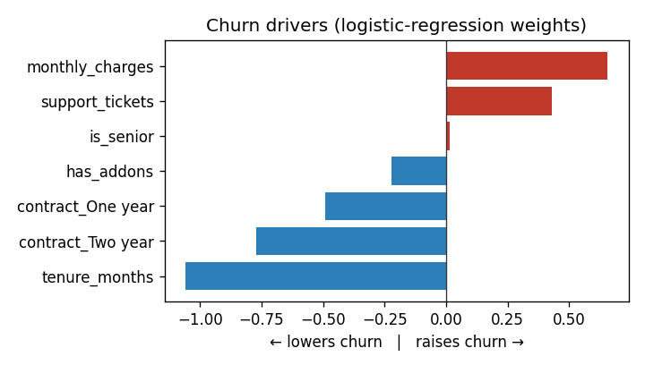

Machine learning · model card
ml-churn-pipeline
A NumPy churn classifier evaluated with a leakage-safe split, a baseline to beat, five-fold cross-validation, and explicit limits.
Public · synthetic demoThe problem
One lucky accuracy score is not evidence.
Churn demos often leak test information, ignore the majority baseline, and omit uncertainty. This pipeline reports what a held-out model actually beats and how stable that result is across folds.
Input
A fictional customer feature table
1,500 customers → split first 1,125 train / 375 held-out test Features: tenure, monthly charges, support tickets, contract type, add-ons, and senior flag Scaler: fit on training rows only
The money shot
Baseline beaten, result cross-validated
Held-out ROC-AUC0.7982
Majority baseline0.5000
5-fold CV ROC-AUC0.819 ± 0.0298

| Metric | Model | Baseline |
|---|---|---|
| Accuracy | 0.7067 | 0.5893 |
| Precision | 0.6571 | 0.0 |
| Recall | 0.5974 | 0.0 |
| F1 | 0.6259 | 0.0 |
| ROC-AUC | 0.7982 | 0.5 |
Confusion matrix @ 0.5: TP 92 · FP 48 · TN 173 · FN 62.
How it's verified
The model card is part of the output.
The split occurs before scaling; evaluation includes a majority-class baseline, held-out precision/recall/F1/AUC, five seeded folds, a confusion matrix, and interpretable coefficients. Tests guard leakage, reproducibility, metric math, and baseline improvement.
Honest limitations
- Training data is synthetic; coefficients illustrate the method, not a real customer base.
- Weights are correlational, not causal.
- Class balance and the decision threshold must reflect the business cost of false positives and missed churners.
- Retrain and re-evaluate on real data and monitor drift. Predictions support a human decision; they are not an automated verdict.